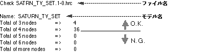

Return to previous page | Return to menu | Go to next page
Using the TV monitor data created in the designer's tutorial as an example, the data conversion, processing, and delivery procedures will be explained in detail.
Open a UNIX shell. there,
cd STUDY / MODELS (line feed)
Enter. Now the path display is
[(Home directory name) / STUDY / MODELS]
It should have become. Where ls (line breaks) please do it. There should be “SATURN_TV_SET.1-0.hrc” here.
Caution
This is the version display, so it is not necessarily “1-0”, but if the name is as above, there is no problem.
here,
cp SATURN_TV_SET.1-0.hrc ‾ / CHECK (line feed)
Please enter.
Caution
“‾” is above the “TAB” key. “‾” indicates the home directory. This symbol is often used because it is convenient.
Here is another UNIX shell, where
cd CHECK (line feed)
And ls (line feed) . In this CHECK directory, You can confirm that “SATURN_TV_SET.1-0.hrc” exists. Here, after confirming that there is no .hrc file other than this file,
slcon -c -f SATURN_TV_SET.1-0.hrc (line feed)
Please enter. Then the following will be displayed.

The only models that can be put into Saturn are those with numbers only in “Total of 3 nodes” and “Total of 4 nodes”, and there should be no more than “Total of 5 nodes”.
Caution
Only models that meet the above conditions can be textured. How to paste textures using “SMAP” is explained in “Chapter 6 of Designer ’s Tutorial: How to use SMAP”.
Finally,
mkdir ‾ / CONV (line feed)
cp SATURN_TV_SET.1-0.hrc ‾ / CONV (line feed)
To copy the file as data to be passed to the programmer.
next,
cd ‾ / CONV (line feed)
To change directories.
Please ls (line feed) here. There should be a file here.
Let's change the file name here.
mv SATURN_TV_SET.1-0.hrc sample.hrc (line feed)
Will be converted to “sample.hrc”.
If you don't add a texture:
Proceed to the next step using the file “sample.hrc” above.
To paste a texture:
Assuming that “sample_smap.hrc” was generated by SAMP, proceed to the next step.